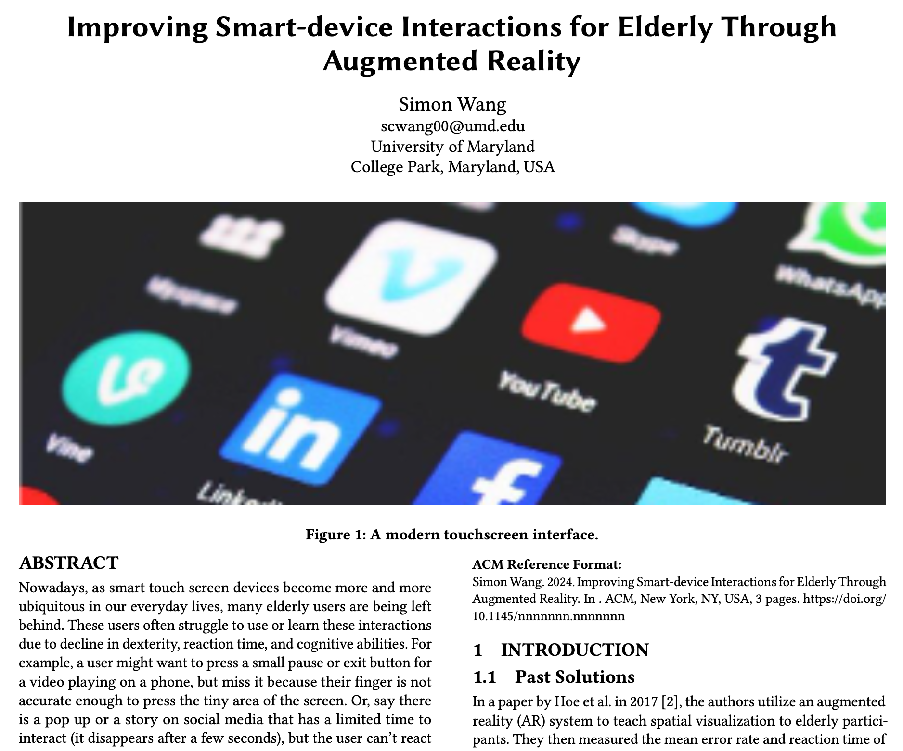

Augmented Reality for Enhancing Elderly Interaction with Touch Screens
A hypothetical research project for CMSC839A - Embodied Media Design

About the project
Hypothetical research project for CMSC839A - Embodied media design.
Abstract
Nowadays, as smart touch screen devices become more and more ubiquitous in our everyday lives, many elderly users are being left behind. These users often struggle to use or learn these interactions due to decline in dexterity, reaction time, and cognitive abilities. For example, a user might want to press a small pause or exit button for a video playing on a phone, but miss it because their finger is not accurate enough to press the tiny area of the screen. Or, say there is a pop up or a story on social media that has a limited time to interact (it disappears after a few seconds), but the user can’t react fast enough in order to use the interaction. As human computer interaction designers, it is paramount to consider the accessibility of new devices. Rather than focusing purely on creating more powerful devices with more functionalities, we must remember to ensure our technology is accessible to all users and not exclude a certain group like the elderly.